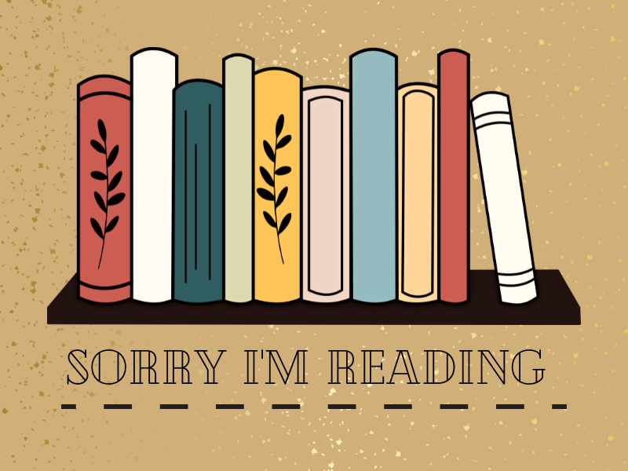

Home Page
Homework is one of the few constants in my life. So why make it harder than it has to be? Enjoying something while you do it helps you not only make the task go by faster, but also makes your work better. Even if you have no homework or work to do, loading up a book to read or playing a some calming music can really help you performance during the day. I personally enjoy reading, writing, amd listening to music. This is a place one can go when the world gets to be too much, even if you just want to think, read, or double check assignments, this can help. To help organise one's life, and give you a little headspace to think.